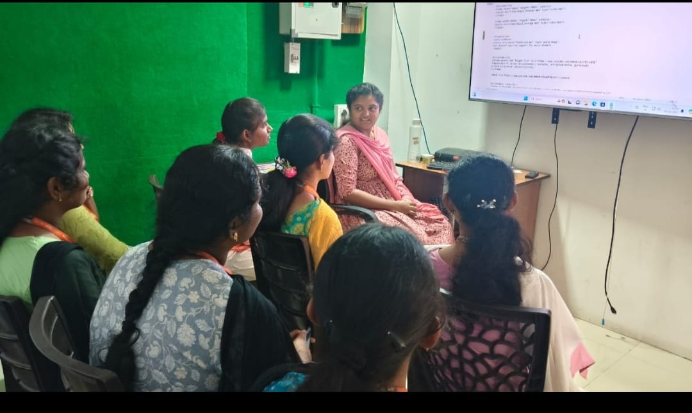
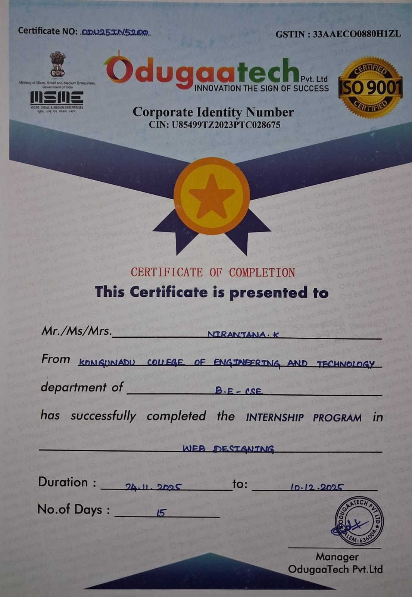

← Back to Portfolio
Web Designing Internship
Odugaatech Pvt. Ltd.
Duration: 15 Days
Domain: Web Design & Front-End Development
During this internship, I worked on designing responsive web interfaces
and improving webpage presentation using modern front-end development
techniques. The experience helped me understand how attractive and
user-friendly interfaces are created for real-world web applications.
Responsibilities
- Designed responsive web page layouts.
- Worked with HTML, CSS, and JavaScript for front-end development.
- Improved webpage structure and visual presentation.
- Learned UI/UX design basics for better user experience.
- Assisted in creating interactive and mobile-friendly web pages.
Technologies Used
- HTML
- CSS
- JavaScript
- Responsive Web Design
- VS Code
What I Learned
- Creating responsive layouts for mobile and desktop screens.
- Designing visually appealing user interfaces.
- Using CSS for spacing, alignment, colors, and animations.
- Improving website readability and user interaction.
- Understanding professional front-end development practices.
Internship Certificate


Internship Outcome
This internship enhanced my front-end development and web design skills.
It improved my understanding of responsive design, UI presentation, and
user-focused web development, which helped me build more professional
and visually attractive web applications.